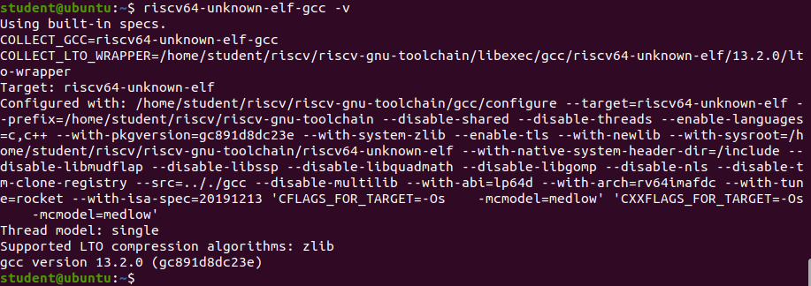

Lab 0: Environment Setup & Hello World#
Environment Setup#
Please search how to install VMware workstation 17 on internet, and click cloud link to download the installer.
Virtual Machine VM
Download : Click here (19GB, suggest preparing at least 50GB for VM)
Platform: Ubuntu20.04 amd64
Machine: COVM
Account: student
Password: student
Setting up by yourself#
If you have Ubuntu20.04, the following is setup guide, however, the process might take hours.
tools#
sudo apt install git
sudo apt install vim
riscv-gnu-toolchain#
Fetch source
mkdir riscv
cd riscv
git clone --recursive https://github.com/riscv/riscv-gnu-toolchain
Add two lines in the end of ~/.bashrc
export RISCV="/home/{your_user_name}/riscv/riscv-gnu-toolchain"
export PATH=$PATH:$RISCV/bin
Reload ~/.bashrc
source ~/.bashrc
Install Prequisite
sudo apt-get install autoconf automake autotools-dev curl python3 python3-pip libmpc-dev libmpfr-dev libgmp-dev gawk build-essential bison flex texinfo gperf libtool patchutils bc zlib1g-dev libexpat-dev ninja-build git cmake libglib2.0-dev libslirp-dev
Compile and install
cd riscv-gnu-toolchain
./configure --prefix=$RISCV
make -j$(nproc)
make linux -j $(nproc)
Check if installed successfully
riscv64-unknown-elf-gcc -v

riscv-tools#
Clone the respository
git clone https://github.com/riscv/riscv-tools.git
cd riscv-tools
git submodule update --init --recursive
Prequsites
sudo apt-get install autoconf automake autotools-dev curl libmpc-dev libmpfr-dev libgmp-dev libusb-1.0-0-dev gawk build-essential bison flex texinfo gperf libtool patchutils bc zlib1g-dev device-tree-compiler pkg-config libexpat-dev
Build in riscv-tools
./build.sh
If success, the terminal shows in the end.
RISC-V Toolchain installation completed!
If running into ./machine/flush_icache.c:4: Error: unrecognized opcode 'fence.i', extension 'zifencei' required
Modify
./build.shappend Line 22--with-arch=rv64gc_zifenceiRerun
./build.sh
# Original
CC= CXX= build_project riscv-pk --prefix=$RISCV --host=riscv64-unknown-elf
# New
CC= CXX= build_project riscv-pk --prefix=$RISCV --host=riscv64-unknown-elf --with-arch=rv64gc_zifencei
If running into multiple definition of 'host' error
Modify file
./riscv-tests/isa/Makefile, append variableRISCV_GCC_OPTSwith-fcommonRerun
./build.sh
# original
RISCV_GCC_OPTS ?= -static -mcmodel=medany -fvisibility=hidden -nostdlib -nostartfiles
# New
RISCV_GCC_OPTS ?= -static -mcmodel=medany -fvisibility=hidden -nostdlib -nostartfiles -fcommon
Verilator#
# Prerequisites:
sudo apt-get install git perl python3 make autoconf g++ flex bison ccache
sudo apt-get install libgoogle-perftools-dev numactl perl-doc
sudo apt-get install libfl2 # Ubuntu only (ignore if gives error)
sudo apt-get install libfl-dev # Ubuntu only (ignore if gives error)
sudo apt-get install zlibc zlib1g zlib1g-dev # Ubuntu only (ignore if gives error)
git clone https://github.com/verilator/verilator # Only first time
# Every time you need to build:
unsetenv VERILATOR_ROOT # For csh; ignore error if on bash
unset VERILATOR_ROOT # For bash
cd verilator
git pull # Make sure git repository is up-to-date
git tag # See what versions exist
git checkout v5.008 # Switch to specified release version
autoconf # Create ./configure script
./configure # Configure and create Makefile
make -j `nproc` # Build Verilator itself (if error, try just 'make')
sudo make install
Check
verilator --version
gtkwave#
sudo apt install gtkwave
Ripes#
Just download the app image or use online version.